Personal project
16 ft Wooden Catamaran
Length: 16 ft · Construction: stitch-and-glue okoume plywood / epoxy · Rig: Hobie 16 sails and rigging (sail no. 19716), self-built hollow wooden spar · Tools: Fusion 360 · Duration: Nov 2017 – Jul 2020 · Status: Completed June 2020; sailing since July 2020
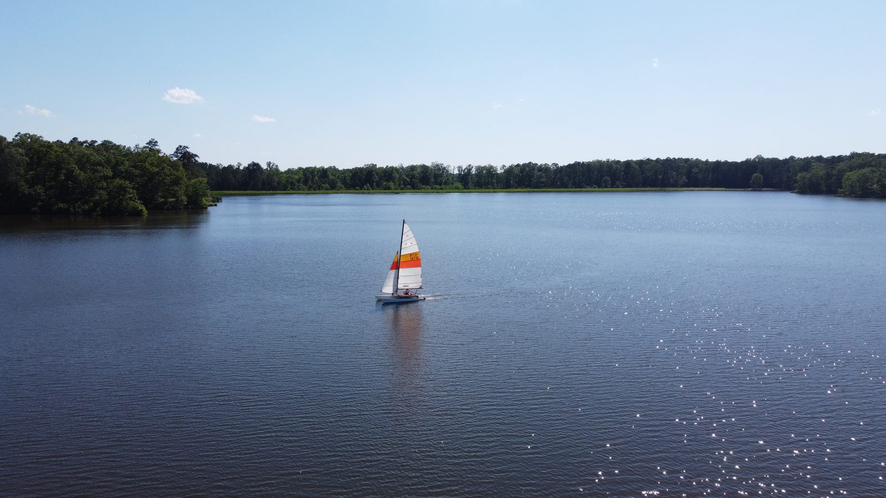
A self-directed design-and-build project: a 16-foot catamaran designed from scratch in plywood and epoxy, built around a second-hand Hobie 16 rig.
Background
The project ran from November 2017 to June 2020 — roughly thirty-one months from first sketches to a finished boat, the large majority of it evenings and weekends in a single-car garage.
Designing to a Fixed Rig
The single most consequential decision was made before any wood was cut: rather than design a sail plan, I bought an existing one. A used Hobie 16 rig — mast, boom, standing rigging, and a fully-battened mainsail carrying sail number 19716 — became the fixed constraint, and the platform was designed around it.
That choice buys a great deal and costs something specific. What it buys is a sail plan that is already known to work: the Hobie 16 carries roughly 218 sq ft between main and jib on a 26 ft 6 in mast, a combination that has been sailed and refined for decades, so the aerodynamics need no validation. It also supplies mast, boom, rigging wire, and sail as a single second-hand purchase, at a fraction of what new equivalents would cost.
What it costs is design freedom. Every load path is now dictated by hardware I did not design and cannot change — chainplate positions, mast step location, shroud angles, and the compression and righting-moment loads the rig imposes are all fixed inputs. The platform underneath has to accept them as given. In practice this inverted the usual design order: instead of sizing a rig to a hull, I was sizing hulls and crossbeams to a rig.
Before committing to that, the rig was stepped in the backyard and the mainsail hoisted, to confirm the spar was straight, the rigging serviceable, and the actual dimensions matched what the platform was being drawn around.
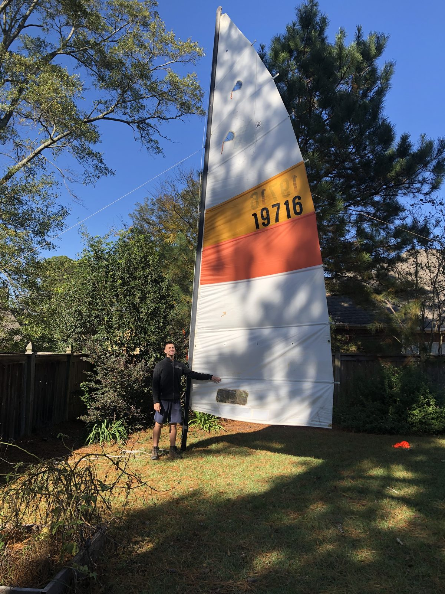
Materials Selection: Why Wood
Wood is an unusual choice to defend to an engineer, so it is worth showing the reasoning rather than asserting the conclusion. The relevant comparison is not strength but bending stiffness per unit weight, because a hull panel is a panel in bending, and on a small beachable catamaran weight is the dominant performance variable.
Compared on panels of equal bending stiffness, plywood is extraordinarily competitive:
| Material | Relative weight | Relative thickness |
|---|---|---|
| Steel | 1.00 | 1.00 |
| Titanium 6Al-4V | 0.65 | 1.22 |
| Aluminum | 0.48 | 1.44 |
| Magnesium | 0.36 | 1.66 |
| Aramid / epoxy | 0.31 | 1.88 |
| E-glass / epoxy | 0.55 | 2.29 |
| 5-ply Douglas fir | 0.21 | 2.97 |
| Aramid / foam sandwich | 0.19 | 3.77 |
Panels of equal bending stiffness, normalized to steel
Plywood reaches 0.21 relative weight — beaten only by an aramid/foam sandwich at 0.19, and beating aluminum by better than a factor of two. The tradeoff is thickness: getting there requires a panel roughly three times as thick as the steel equivalent, which costs interior volume and adds wetted surface at the panel edges. On a boat with hulls this slender that was an acceptable price.
The rest of the case is practical rather than analytical. Plywood and epoxy need no autoclave, no vacuum infusion, and no mold tooling; the entire structure can be built in a garage with clamps, a jigsaw, and a mixing pot. For a one-off with no production run to amortize tooling against, composite construction would have cost more in setup than the material savings would ever return.
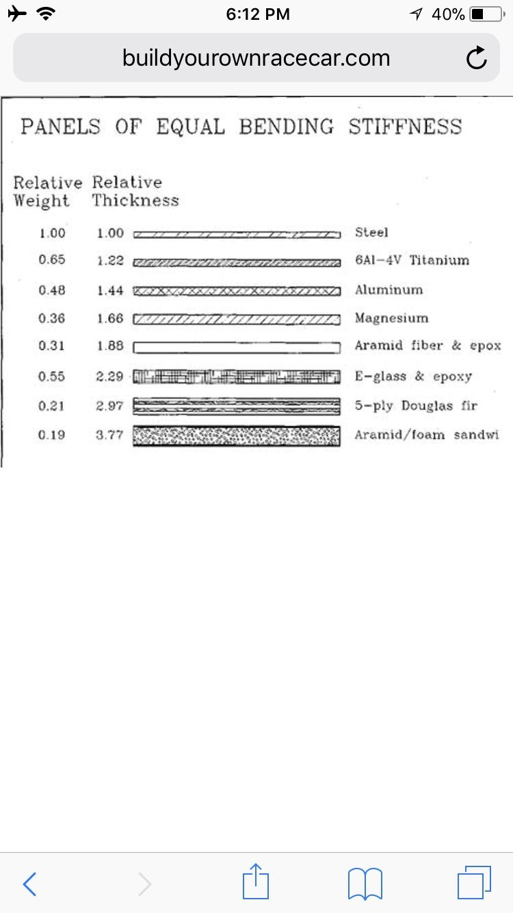
Plywood Specification
The hull skins are gaboon (okoume) marine plywood, Lloyd's Register approved, manufactured by Compensato Toro S.p.A. The certification matters more than it might appear: marine-grade plywood is a claim anyone can print on a label, whereas Lloyd's approval requires a fully waterproof adhesive to a defined standard and a veneer grade with no interior voids. A void inside a laminate is invisible from the outside, becomes a water trap once the panel is drilled or the edge is opened, and is the usual first cause of delamination in a wooden hull.
The epoxy is West System resin with 206 slow hardener. Hardener speed is a real decision rather than a default in this climate: in a Mississippi garage in summer, standard hardener can begin to gel in the pot before a large panel is wet out, and once that starts there is no recovering the batch. Slow hardener trades working time for cure time, which is the right trade when the panels are 16 ft long and the alternative is throwing away mixed epoxy.
Three-ply, equal layers
The hull skins are three-ply, with all three veneers the same thickness.
Both parts of that specification do work. Equal layer thickness makes the panel balanced and symmetrical about its own centreline — the same amount of wood, running the same direction, at the same distance either side of the middle. An unbalanced layup moves as it takes up and gives off moisture, because the two faces respond differently and the panel cups toward the drier side. On a hull skin that is sheathed on one face and open to the inside of the hull on the other, that asymmetry in exposure is guaranteed, so the layup itself has to be symmetric or the panel will fight its own frames.
Three plies rather than five is a stiffness decision. In a three-ply panel the two outer veneers run the same direction and only the core runs across, so about two-thirds of the material lies along the face grain. In a five-ply panel of the same thickness, only three-fifths does, and more of the wood is oriented across the direction the panel is being asked to resist. Since bending stiffness depends on how far material sits from the neutral axis, and the outer layers are exactly the material furthest out, putting both faces along the length of the hull buys the most stiffness available at that thickness.
The trade is directional. A three-ply panel is markedly stiffer and stronger along its face grain than across it, and it is more willing to split along the grain when bent hard the other way. That is an acceptable trade on a hull skin, where the loads and the curvature both run predominantly fore and aft.
Two materials, two jobs
Skin and structure have opposite requirements. A hull skin wants to be as light as possible while remaining stiff enough not to oil-can between frames; a structural member wants strength and the ability to hold a fastener under load. No single species is best at both, so the boat uses two.
Species selection was worked from the wood characteristics tables in Boatbuilding With Plywood, which rate common boatbuilding timbers by weight, strength, glue-and-screw performance, and fastening ability:
| Species | Weight | Strength | Glue & screw | Fastening | Notes |
|---|---|---|---|---|---|
| Okoume | Light | Not strong | Good | Fair | Suitable for light, small boats |
| Longleaf yellow pine | Heavy | Strong | Good | Good | Comparable to Douglas fir |
Okoume goes where light and thin is the whole point — the hull skins. Longleaf yellow pine goes where load has to be carried and fasteners have to hold. It is the heavier material by a wide margin, but it appears in a small fraction of the total volume, so the weight penalty at the boat level is modest and the strength is bought where it actually matters.
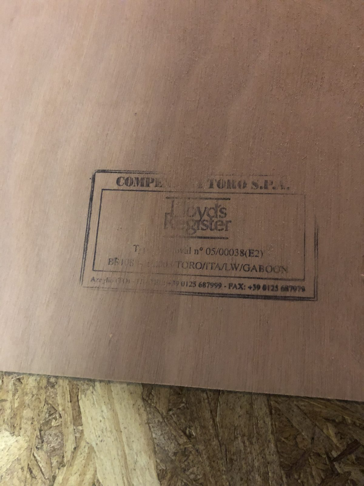
Panel Preparation: Scarf Joints
The hulls are 16 ft long. Plywood comes in 8 ft sheets. Every hull panel therefore had to be joined before it could be cut to shape, and the joint had to be as stiff as the panel around it — a butt strap would have created a hard spot exactly where the panel needs to bend fair.
The solution is a scarf joint: both sheet ends are planed to a long feathered taper and bonded with epoxy, producing a glue line many times the panel thickness in length and a joint that flexes with the surrounding wood instead of resisting it.
Clamping pressure came from free weights laid along the joint. That sounds improvised, and it is, but the requirement is genuinely modest: an epoxy scarf needs even, light contact pressure, not the high clamping force a mechanical fastener joint would demand. Squeezing an epoxy joint too hard starves it of adhesive and makes it weaker, not stronger.
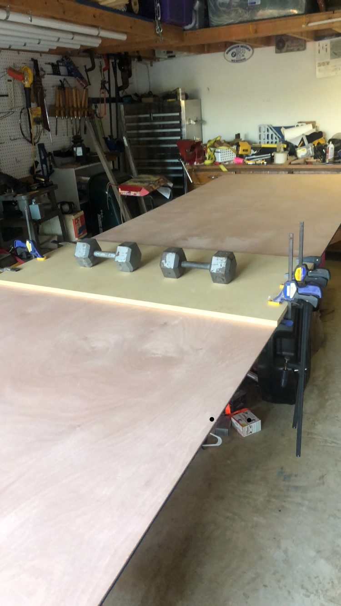
The first thing built for the project was not part of the boat at all: a full-length, flat work table sized to take a joined 16 ft panel. Panels glued up on an unfair surface take the shape of the surface, so the table's flatness became the reference for everything downstream.
Lofting and Cutting
Hull panel shapes were marked out directly onto the joined sheets from a table of offsets, with battens sprung through the marked points to fair the curves before cutting.
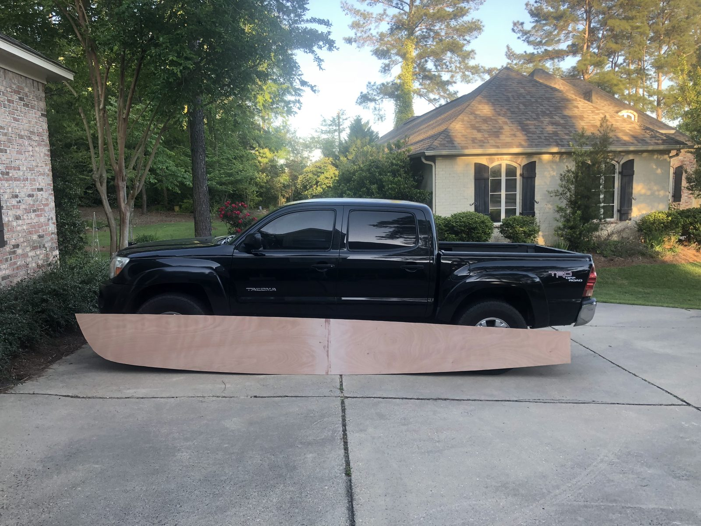
Stitch-and-Glue Assembly
The hulls are assembled by the stitch-and-glue method: flat panels are drilled along their mating edges, laced together with wire, pulled up into three-dimensional shape, and then permanently bonded with thickened epoxy fillets and glass tape along the seams. Once the epoxy cures, the wire is redundant and can be cut out.
Stitches were bent by hand from copper wire. Copper is soft enough to twist tight without work-hardening and snapping, and — unlike steel — anything left embedded in the laminate will not rust and stain through the finish later.
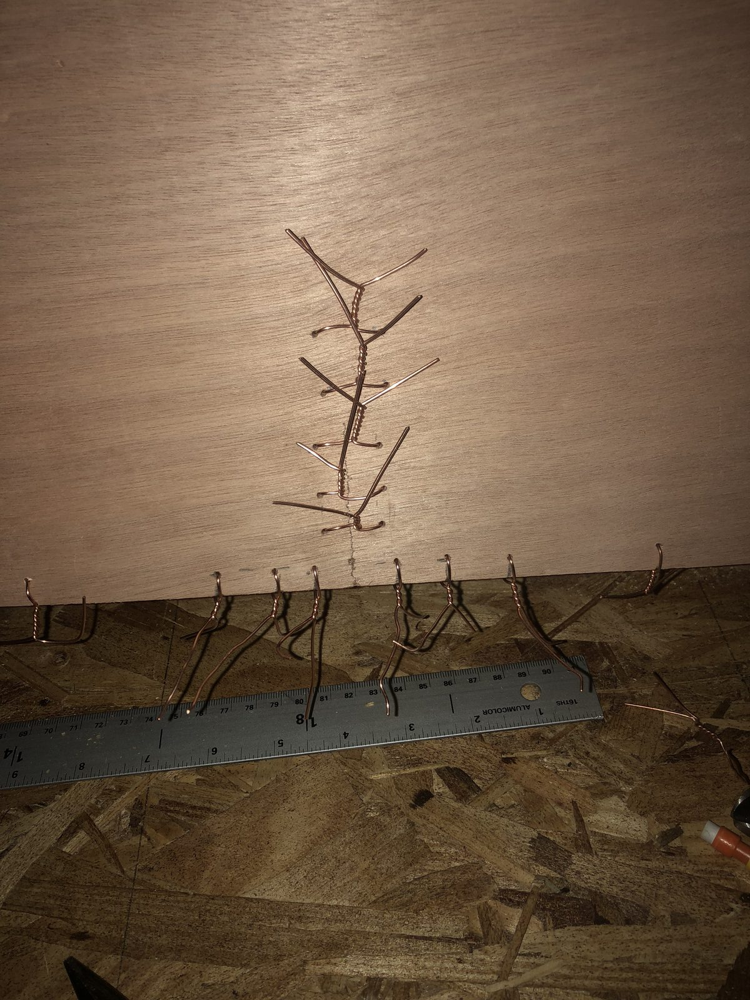
Ratchet straps did the heavy work of pulling the panels into shape; the stitches held the seam alignment once the strap took the load. Long edge glue-ups used a set of shop-built wooden screw clamps, made specifically for this project because the reach required was well beyond anything available off the shelf at a sane price for the number needed.
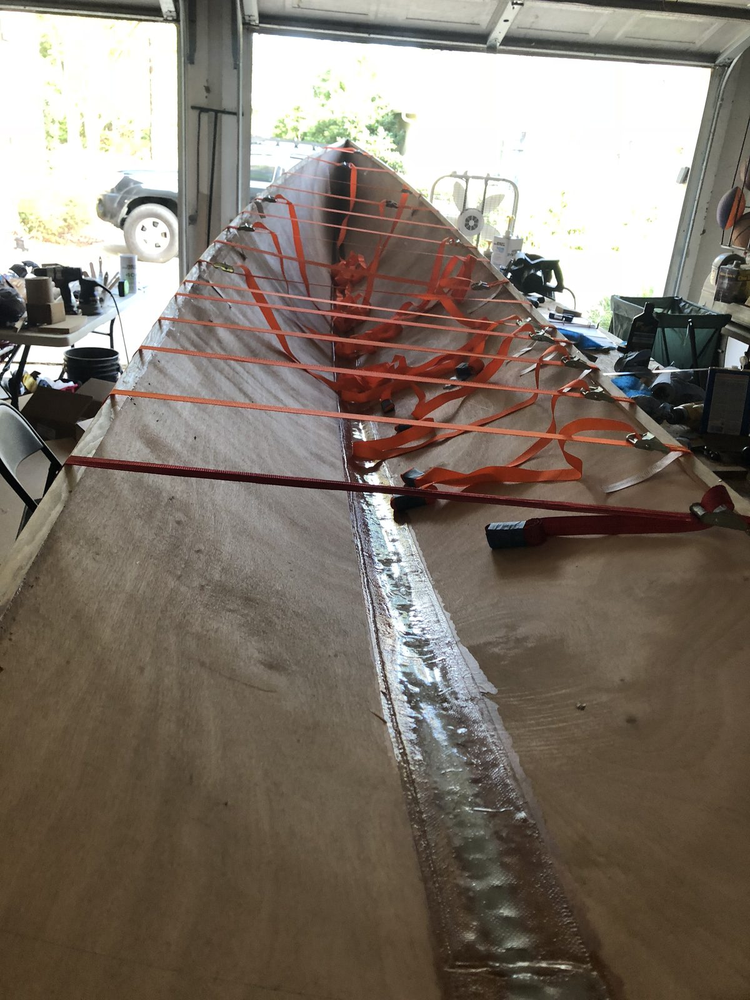
Internal framing
The hulls are not bare stitched shells. Each carries a set of transverse frames at regular spacing with longitudinal members running through them, so the skin is not the sole source of stiffness — it works with a frame set that holds the section shape, spreads local loads, and gives the deck a landing all the way down the hull.
This matters more on a catamaran than on a dinghy. A hull this slender has very little inherent resistance to being squeezed out of section, and every load the rig and beams impose eventually arrives at the hull as a point load. Frames turn those point loads into something the skin can carry.
The bays between frames in both hulls carry rigid foam, adding buoyancy that does not depend on the hull staying watertight. On a boat that will eventually be capsized — and every beach cat is, sooner or later — reserve buoyancy built into the structure is the difference between a boat you right and sail home and a boat you swim away from.
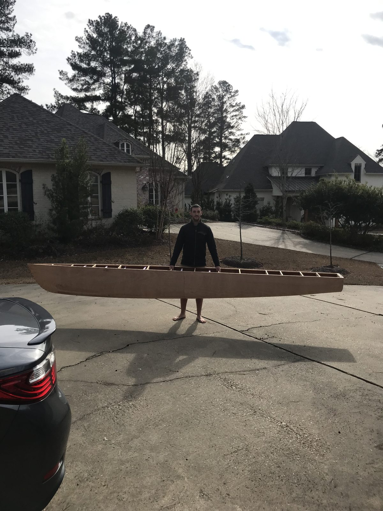
Decking: Bending Plywood It Doesn't Want to Bend
The deck is cambered, and the panel had to take that curve in two directions at once near the ends. Dry plywood pushed to a tight radius does one of two things, and both are failures: it cracks the outer veneer along the grain, or it takes the bend and then spends the rest of its life trying to spring back out of the joint.
The fix is water. Plywood wet through becomes markedly more pliable, accepts a tighter radius without cracking, and — once it dries clamped in position — holds a good deal of the new shape rather than fighting the fasteners. So the panel was hosed down and covered with wet towels to keep it soaked while it went on.
Clamping came from ratchet straps spaced roughly a foot apart down the whole hull, which pull evenly and can be re-tensioned as the wood relaxes. The whole operation happened in the driveway rather than the garage, for the simple reason that it involves soaking a 16 ft panel with a garden hose, and it needed three people: two easing the panel down onto the sheer while a third ran the straps.
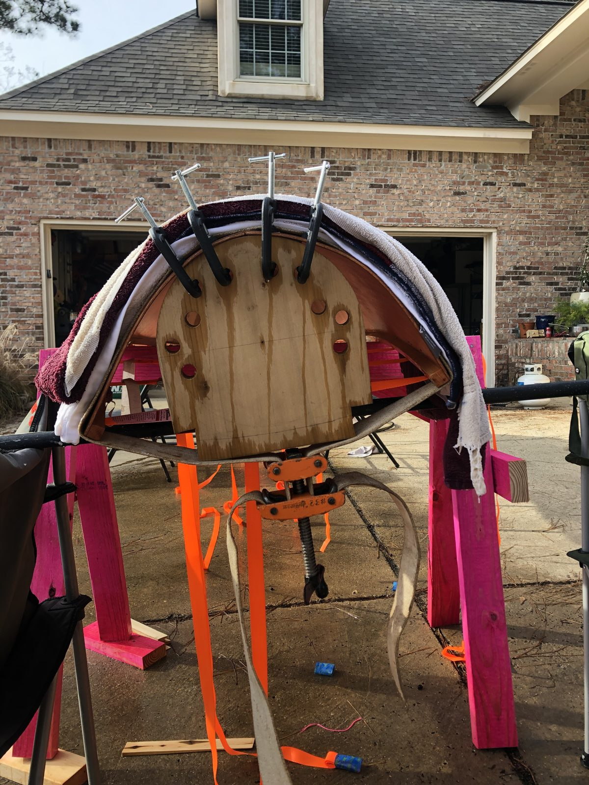
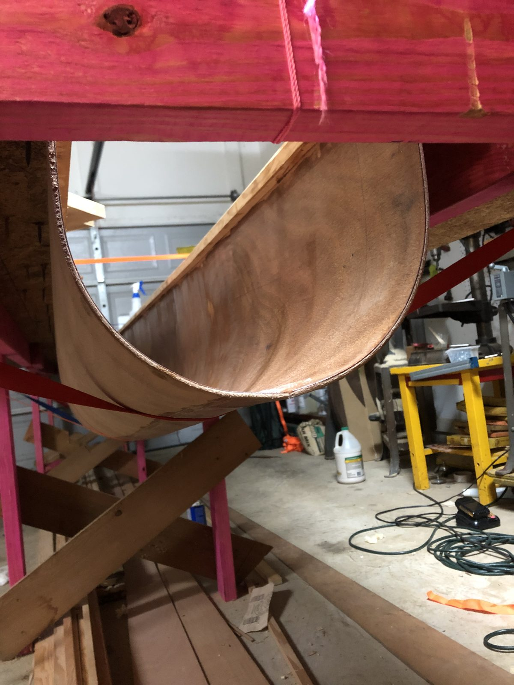
Sheathing
Once the hulls were closed out, both were turned upside down and sheathed in fiberglass cloth wetted out with epoxy over the entire exterior, rather than only taping the seams.
Full sheathing costs weight and a great deal of sanding, and it is genuinely optional — plenty of stitch-and-glue boats get by with taped joints and a coating of neat epoxy. The argument for doing the whole hull is abrasion and water. This is a beach-launched boat that will be dragged onto sand and ramps, and the loads that damage a plywood hull in service are rarely the sailing loads; they are the grounding, the trailer bunk, the dropped anchor. A glass skin takes that damage in a material that does not care about it, and it puts a continuous water barrier over every panel, every seam, and every end grain at once.
The hulls carry 6 oz cloth; the cedar-strip decks carry 4 oz.
Using two weights is a deliberate split rather than a leftover. The hulls are what gets dragged up ramps, set down on trailer bunks, and grounded on whatever is under the water at a launch site, so the skin there is chosen for abrasion and puncture resistance and 6 oz buys that. The decks see feet and gear, not gravel — and they are the surface people look at. Lighter 4 oz cloth wets out clearer, drapes more easily over the curvature of strip planking without bridging, and adds less weight high up, which on a catamaran costs righting moment at a poor lever arm.
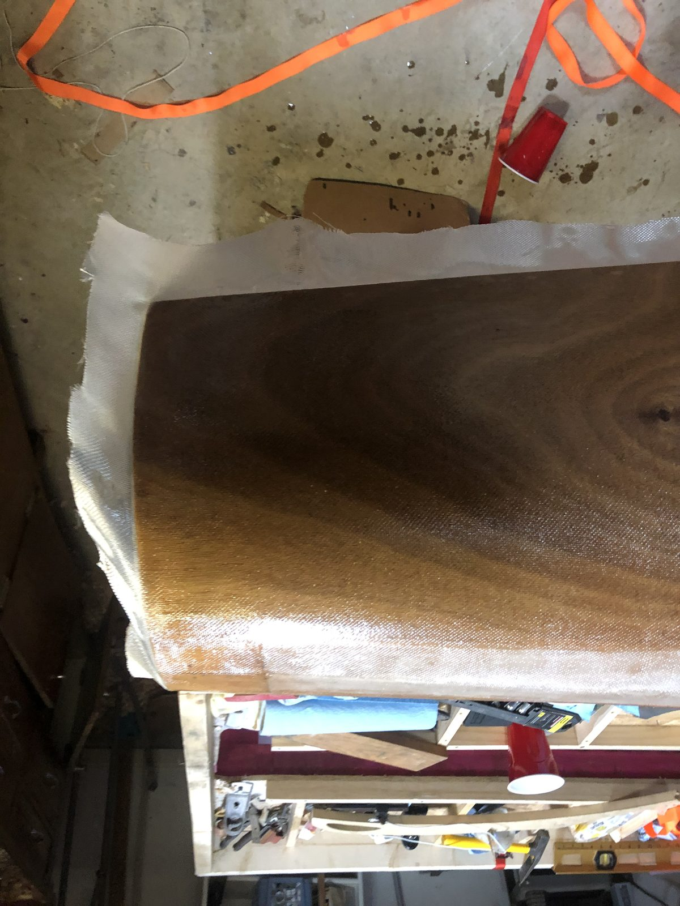
Structural Simulation
Douglas fir was set up as a material in Fusion 360 for finite element work on the structure. The density and elastic modulus were entered correctly — 559 kg/m³ and 12.6 GPa, both good published figures for Douglas fir.
The rest of the material card was not. Poisson's ratio sat at 1×10⁻⁴ against a real value near 0.3, and both yield strength and ultimate tensile strength sat at 1×10⁻⁵ MPa against a real tensile figure closer to 85 MPa along the grain. Those are placeholder defaults that were never overwritten.
That has a precise consequence, and it is worth being exact about rather than vague. Deflection results from a model like this are still meaningful, because displacement under load is governed by elastic modulus and geometry, and the modulus was right. Stress results, and anything derived from them — safety factor, failure prediction, "does this hold" — are not, because the model was told the material has essentially no strength. Everything fails, everywhere, at any load.
There is a second limitation worth naming regardless. Wood is orthotropic: its stiffness along the grain is on the order of twenty times its stiffness across the grain, and plywood is a laminate of alternating grain directions on top of that. An isotropic material card with a single modulus cannot represent either. For rough comparative work — is version A stiffer than version B — that simplification is usually tolerable. For an absolute number it is not.
The Shop Constraint
The boat was built in a shared garage that had to be emptied before work could start and repacked before the end of the day. Every session began by moving cars, tools, furniture, and stored household goods out onto the driveway, and ended by putting all of it back, usually a little after dark.
That constraint shaped the schedule more than any technical decision in the project. A shop you set up and tear down imposes a fixed overhead on every session, independent of how much work gets done inside it. Once that overhead is high enough, short sessions stop being worth starting: an hour of available time buys no progress, because the hour is consumed by setup and teardown. Work therefore has to batch into long blocks, long blocks require daylight and free weekends, and a task representing twenty hours of actual labor spreads across months of calendar.
It also dictated where the work happened. Wet-bending decks, sheathing, fairing, and sanding all took place in the driveway rather than the shop, partly because they needed the room and partly because the shop was frequently occupied by its normal contents.
The engineering lesson is one that transfers directly to professional work: fixed overhead per work session is a schedule multiplier, and it is invisible in any estimate built from task durations alone. Estimating this project by adding up the hours the tasks actually required would have produced a number wildly disconnected from the thirty-one months it took.
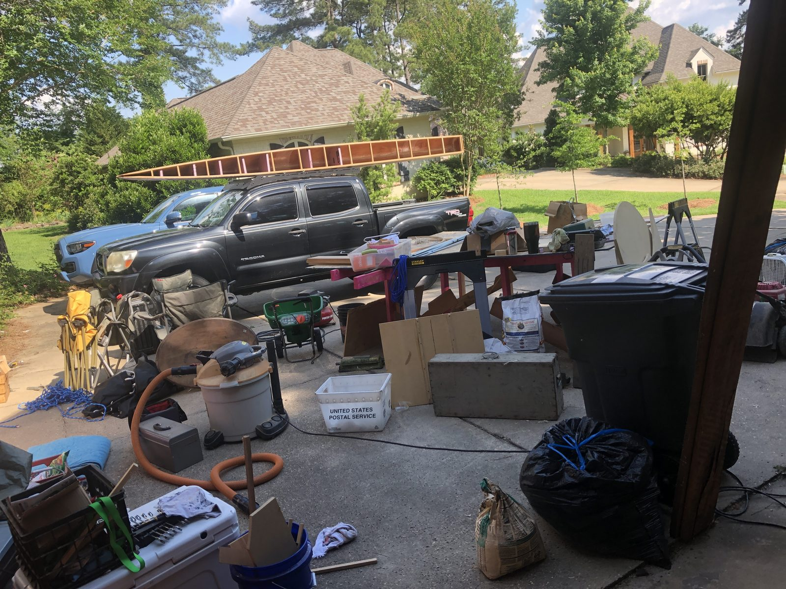
Iteration: Three Attempts at a Hull
The hull that ended up on the boat was the third one built.
That fact reframes the project's timeline more than anything else in it. Thirty-one months for a 16 ft boat looks like a slow build until you know that a substantial part of it was spent building hulls that were then set aside and started over — at which point it stops being a schedule problem and becomes an iteration count.
After Action: The Deck Crack
In early February 2019 a split appeared in the deck near the sheer, running along the grain.
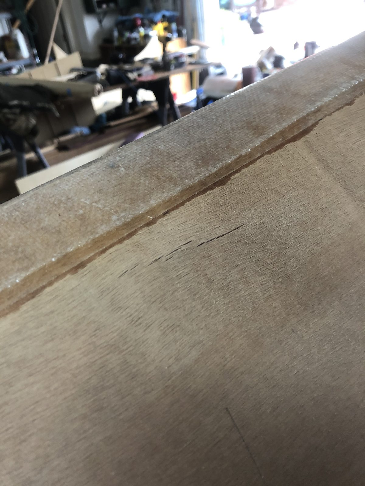
First Assembly
On 1 September 2019 the boat went together for the first time: both hulls, both cambered beams seated on their pylons, trampoline laced and tensioned between them. Twenty-two months from the first sketches.
A first full assembly is a genuine engineering milestone rather than just a photograph. Every part until then had been checked against a drawing or a mockup; this is the first time all of them were checked against each other. Fit errors that a drawing will happily tolerate — a pylon a few degrees off vertical, beams that don't sit parallel, a trampoline cut to a frame that turns out not to be square — only appear here.
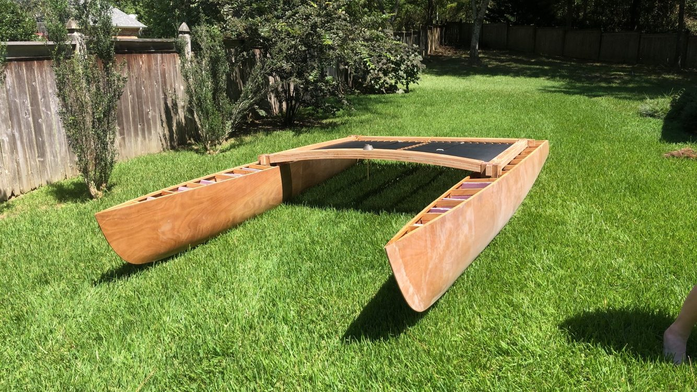
Worth noting from the photograph: the hulls are still open at this point, with frames and foam exposed. The decks photographed in December 2018 and January 2019 belonged to earlier attempts.
The Mast Step
A hardwood block on the beam carries a socket for the mast heel. The photographs from 8 September 2019 show a large-diameter round aluminum tube standing in that socket — sized for the sleeve that would later be bonded into the heel of the wooden spar.
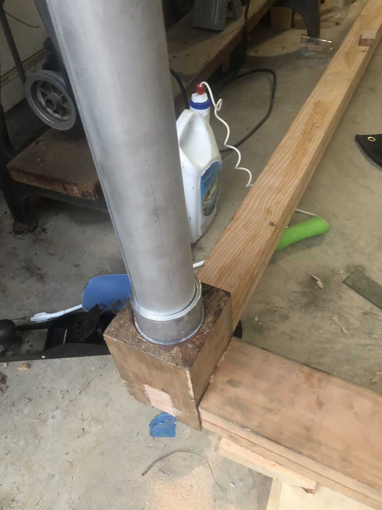
Standing the Rig: Locating the Shroud Anchors
In December 2019 the mast was raised on the assembled boat in the backyard, with a temporary spreader holding the bows at their spacing, in order to find where the shroud anchors should go.
The shroud base position is not a cosmetic decision. The angle each shroud makes with the mast determines how much wire tension is needed to hold the spar up, and that tension turns into compression down the mast and into the platform beneath it. A wider shroud base does the same job with less tension and less compression — but pushes the anchor outboard, toward the edge of a hull where there may be no structure to bolt to. A narrow base needs much higher tension for the same support, and all of it lands in the mast. Fore-and-aft placement sets the rake.
The geometry of that is calculable. What isn't calculable from a drawing is where the wire actually lands relative to structure that exists: whether the anchor falls on a frame you can bolt through or a bay you can't, whether it fouls the trampoline lacing, whether the lead is fair. Standing the rig up and pulling the wires to candidate points answers those questions directly, and at the same time confirms that the mast stands straight and that the step and beam carry the load.
Doing it at night in a backyard in December, with the boat assembled on the grass, is also a fair summary of how the whole project was built.
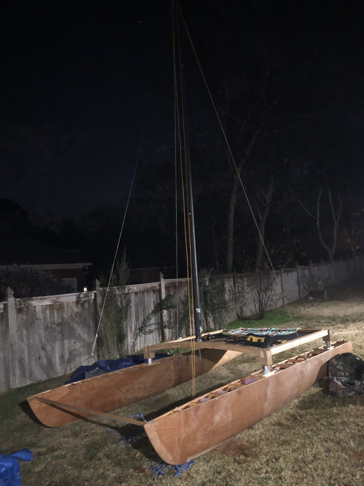
The Spar
The mast is a hollow wooden spar, built from staves of alternating light and dark stock glued up around a hollow core, tapering from the heel to a point at the head.
Building a spar rather than using the salvaged aluminum one is the second major decision of the project, and it partly reverses the first. The rig was bought to avoid designing a sail plan; the mast was then built anyway. What that buys is a spar tuned to this boat rather than to a Hobie 16 — and a hollow wooden section can be lighter than solid for the same stiffness, which matters more on a mast than almost anywhere else on a boat, because weight aloft costs righting moment at the worst possible lever arm.
The construction is a staved hollow spar: individual strips milled with mating edge profiles, assembled into a closed tube, and shaped round afterward. It is the standard way to build a light wooden spar, and it works because a mast in bending carries almost all its stress in the outer fibers — the material at the center of a solid spar contributes weight and very little stiffness, so removing it is nearly free.
The dark strips alternating with the light ones are structurally incidental and visually deliberate. It costs nothing to alternate species during layup and it turns a functional part into something worth looking at.
Before any glue, the whole spar was dry-assembled and strapped, held with tape and ratchet straps, to confirm the staves closed cleanly along the full length and the taper came out fair. A hollow spar glue-up is unforgiving: every joint has to close simultaneously, the epoxy is curing while you work, and there is no adjusting it once it goes off. A dry run is the only way to find a stave that won't seat before it matters.
The heel carries an aluminum sleeve set into the hollow section. That detail is not decorative. A mast heel sits in a socket, takes the full compression of the standing rigging, works against the step with every motion of the boat, and lives in whatever water finds its way into the step. Bare end grain in that position crushes under bearing load and wicks water into the laminate. A bonded metal sleeve gives a hard bearing face, seals the end of the spar, and lets the wooden mast seat into the same socket that was trial-fitted with plain tube in September 2019.
Once shaped and faired, the spar was sheathed in glass cloth and epoxy.
On the hulls, sheathing is about abrasion and water. On the spar it is also structural. Every wood fiber in a staved spar runs lengthwise, which is ideal for bending — the load a mast mostly sees — but leaves the section weak in torsion, and a sail twists its mast every time it is sheeted in. Glass wrapped around the tube contributes fibers at angles the wood does not have, and those are what carry the twist. The sheathing also seals the glue line between every stave, which on a hollow spar are exactly the paths water would otherwise take into the core.
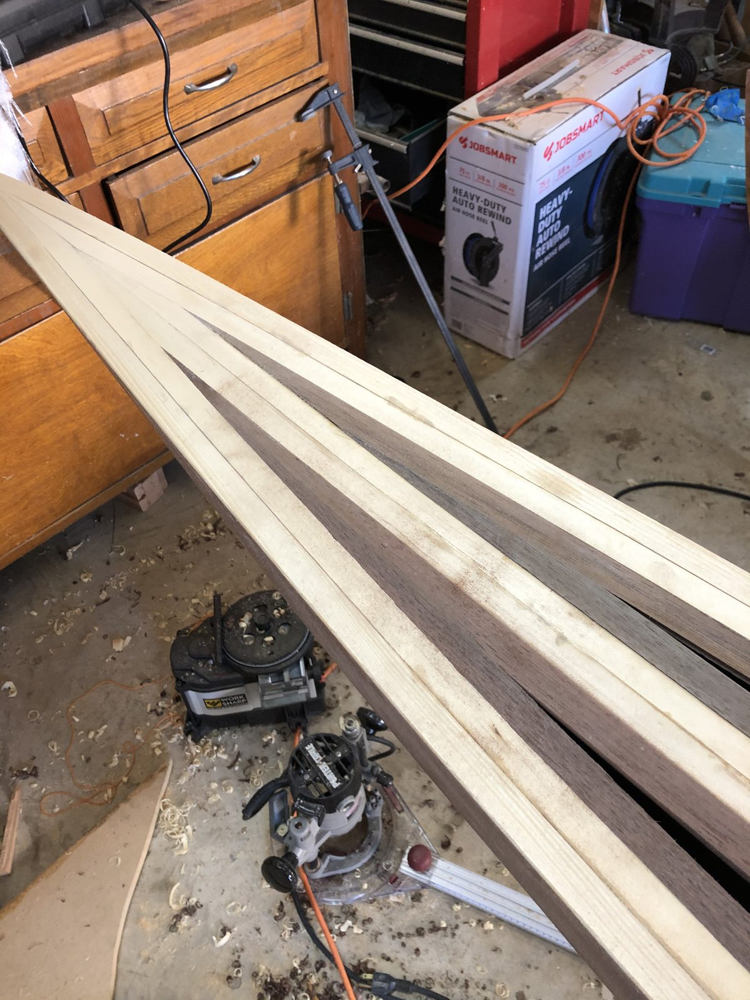
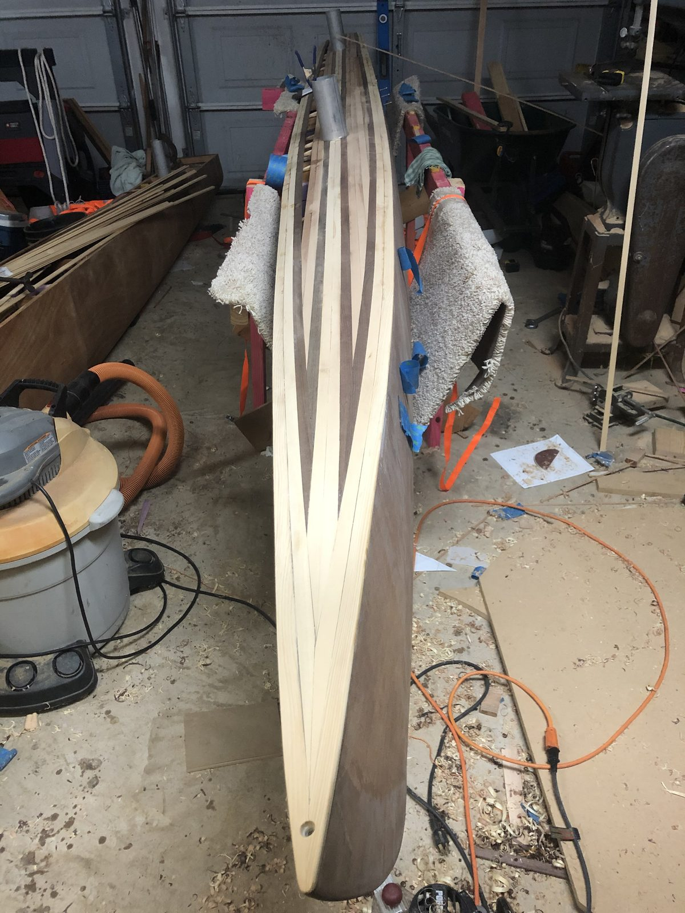
Foils
A rudder blade is a wing. Its job is to generate side force with as little drag as possible, and unlike almost every other part of the boat, its performance is determined by shape rather than strength — a blade that is plenty strong but carries a lumpy, asymmetric section will stall early, feel vague, and drag.
That makes shaping a foil the hardest hand skill in the project. The section has to be fair along the whole span and symmetrical about the centerline, and the only tools for it are a plane, a sanding block, and judgement.
So the first rudder was made out of foam and thrown away. Foam costs nothing, shapes in minutes, and can be cut apart to check the section — which means every mistake in learning to shape a foil gets made on material that doesn't matter, before any hardwood is touched.
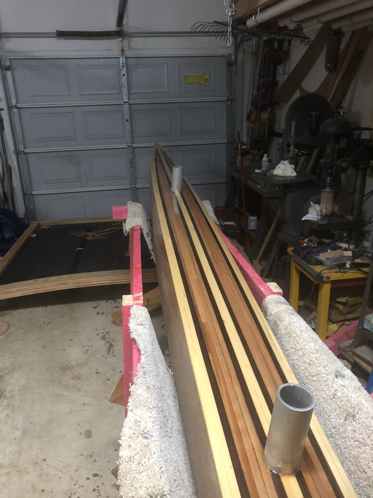
Fit-Out and Detail
Not every decision on the boat was structural. A compass rose was designed as a marquetry inlay — eight points in alternating light and dark woods, cardinal letters around the rim, and a latitude and longitude engraved on the outer ring marking a specific place.
It carries no load and saves no weight. It is there because a boat you designed and built yourself gets to have something on it that exists only because you wanted it there, and because the same CAD tool used to lay out hull panels and model a pylon joint will just as happily lay out a veneer pattern.
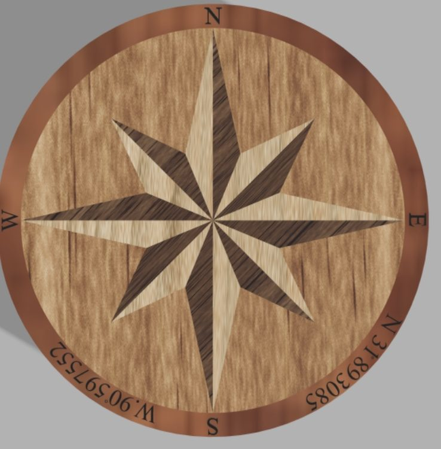
Structural Interfaces
The crossbeam stock is aluminum tube, bought in several diameters so a smaller pylon could telescope inside a larger receiver — the joint modeled in Fusion the previous November.
The crossbeams are laminated wood, built up from strips glued in long clamped runs, and they are cambered rather than straight — each beam arches upward across the span.
Camber earns its complexity twice. It lifts the trampoline and the crew clear of wave tops, which on a 16 ft cat is the difference between sailing and being dragged through every crest. And an arched member loaded downward carries a share of that load in compression along its own curve rather than purely in bending, which lets a lighter section do the same job — provided the ends are restrained against spreading, which on this boat they are, by the hulls themselves.
The platform is a rectangle: two cambered beams running athwartships between the hulls, two straight rails fore and aft, with the trampoline laced inside the frame.
At each of the four corners, the beam and the rail cross in a half-lap, and that lap seats down onto a hardwood post block. The block is the load-bearing part of the assembly: it takes the crossing members above and carries the aluminum pylon below.
The connection to the hull runs through those four identical corner fittings, one per beam end. Each is a hardwood block, slotted on top to receive the beam end and bored underneath to take a short aluminum pylon that seats into a receiver in the hull deck. Aluminum appears only at that spigot; everything spanning between the hulls is wood.
Using hardwood as the adapter between a wooden beam and an aluminum pylon is worth defending explicitly, because a reader's first instinct is that a load path like this should be a machined or welded metal fitting. The case for wood is that it needs no welding equipment or certification, it can be shaped with tools already in the shop, it will not gall against aluminum the way a steel fitting can, and it is compliant enough to spread a bearing load rather than concentrate it at a hard edge. It also joins to the wooden beam with the same glue used everywhere else on the boat. The case against it is creep under sustained load, sensitivity to moisture where the pylon enters, and a bearing surface that can crush over time.
The detail was developed from precedent. The production Hobie 16 carries the same load into a moulded fiberglass hull by bedding the pylon tube in foam and bonding it into the skin, spreading the reaction across a broad area of laminate rather than a narrow ring of it. The problem is identical here; only the material differs, so the principle carries over even though the execution can't.
Inside the hull, the receiver is not simply a tube let into the deck. It stands vertically through the hull structure and is boxed in by framing members tying it to the transverse frames around it.
That boxing is the whole point of the detail. A socket set into a plywood deck with nothing around it concentrates the entire beam reaction into a small ring of plywood end grain — which is the standard way to eventually drive a fitting down through a hull. Framing the receiver into the surrounding structure turns a point load into a distributed one before the skin ever sees it.
The complete load path runs: sail loads into the mast, mast into the step block on the beam, along the cambered beam to the corner, through the half-lap into the hardwood post block, down the aluminum pylon into the receiver, out through the boxed framing into the hull frames and skin. Every transition in that chain is a place where a load can concentrate, and every one of them is detailed to spread it instead.
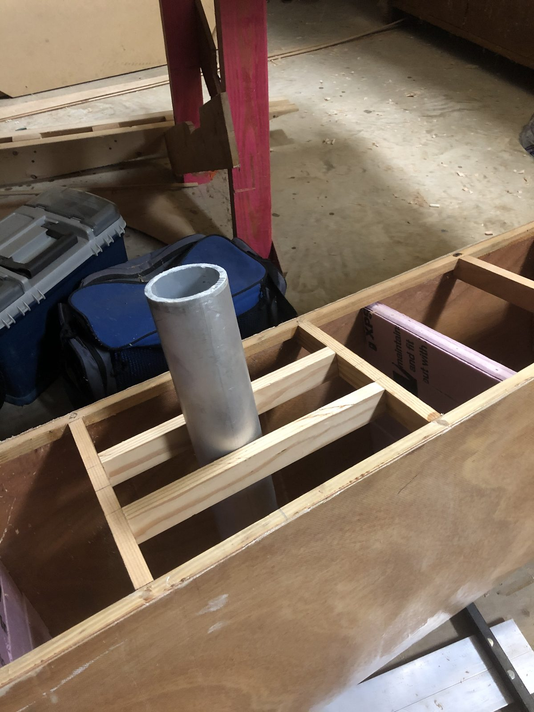
The pylon-in-receiver arrangement also makes the boat demountable: the beams lift off the hulls, which matters for a trailered boat that has to be assembled at the ramp and stored in a garage that has to be emptied to work in.
The joint went through four stages before any production part was cut. A finished prototype in November 2018 proved the half-lap-over-post arrangement in hardwood. A stick-and-dowel model in December checked that the three-way intersection could physically go together at scale. Full-size mockups on the floor in February 2019 confirmed proportions in real material. Production fittings followed in August.
Four prototyping stages is a lot for a single joint, and the reason is that there are four corners. A joint that appears once can be adjusted in place if it comes out wrong; a joint that appears four times identically has to be right before the first cut, because getting it wrong means cutting all four again. Prototype effort should scale with how many times a part repeats, and this is a clean example of that.
The trampoline laces to a grommeted track fastened along the inboard edge of each beam, with line running through the grommets — the standard beach-cat arrangement, which keeps the tramp tensionable and replaceable without touching the structure.
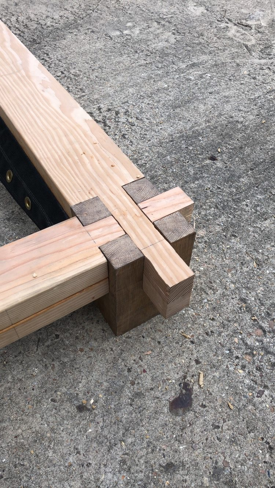
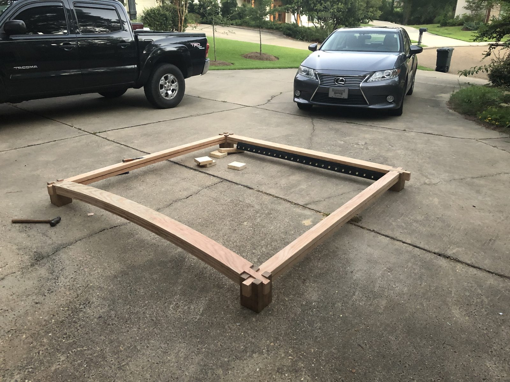
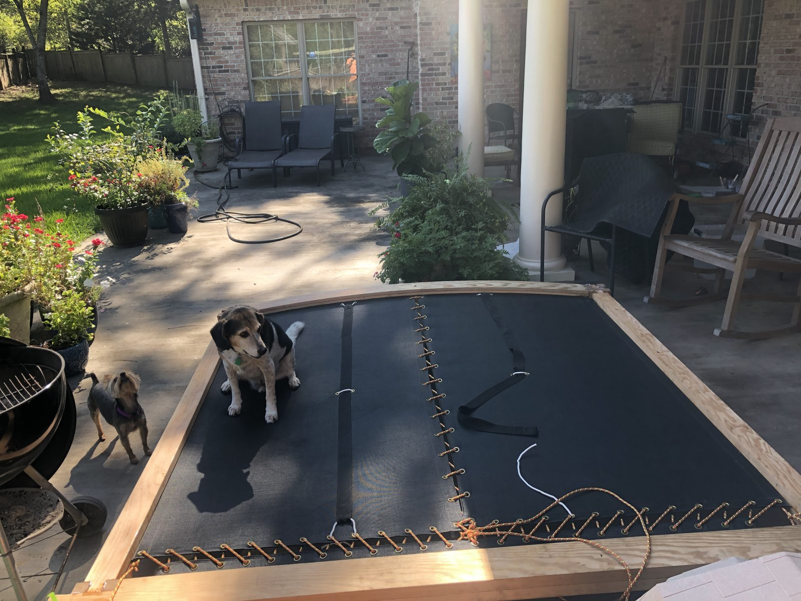
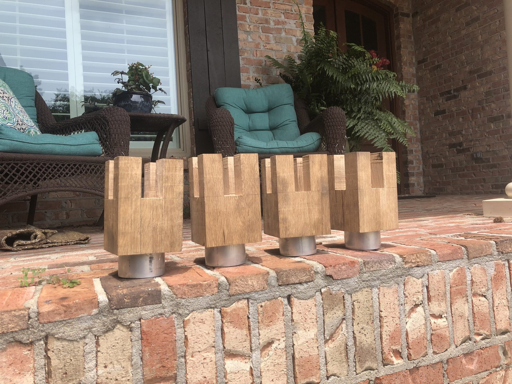
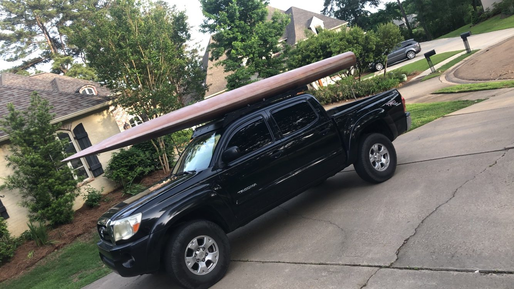
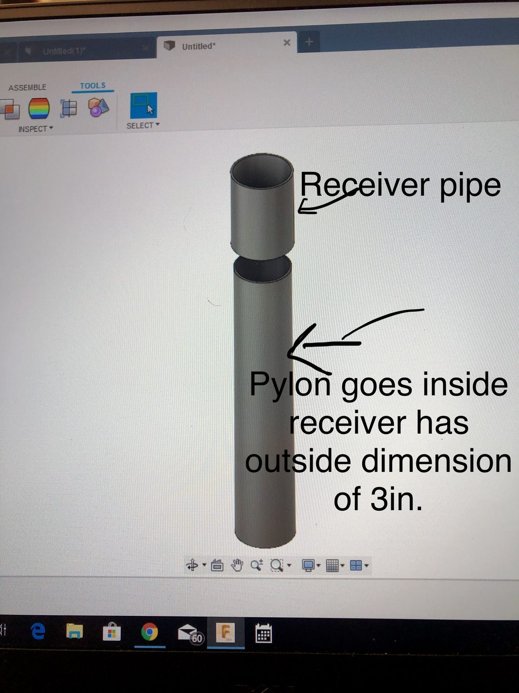
Build Timeline
| Period | Phase |
|---|---|
| Nov 2017 – Feb 2018 | Design phase |
| Mar 2018 | CAD modeling and detail part drawings in Fusion 360 |
| Apr 2018 | Work table built; plywood sourced; scarf joints; lofting and panel cutting |
| May – Aug 2018 | Edge glue-ups, shop-built clamps, stitching preparation |
| Oct 2018 | First hull stitched and filleted |
| Nov 2018 | Rig acquired and test-raised; transom fitted; structural interfaces modeled |
| Dec 2018 | Joint mockups; species selection; a hull decked; another framed and closed out |
| Jan 2019 | A further hull decked |
| Feb 2019 | Deck split found and addressed; hulls sheathed in glass; aluminum beam stock acquired; structural simulation; laminated cedar component designed |
| Mar 2019 | Hull faired and sanded |
| Apr 2019 | Third hull attempt begun — panels cut, stitched, filleted |
| May 2019 | Third hull closed out and framed; beam-to-pylon fittings made in aluminum and hardwood; wooden spar apparently completed |
| Aug 2019 | Crossbeams laminated; corner fittings made; platform and trampoline assembled for the first time |
| Sep 2019 | Trampoline laced and tensioned; first full assembly; mast step trial-fitted |
| Nov 2019 | Pylon receivers installed and framed into the hulls; boat reassembled |
| Dec 2019 | Rig stood on the assembled boat to locate shroud anchors |
| Dec 2019 | Hollow wooden spar staved, dry-fitted, glued up, shaped and glass-sheathed |
| Jan 2020 | Spar completed; first practice rudder shaped in foam |
| Feb – May 2020 | Decks strip-planked; foils shaped; trailer prepared |
| 30 May 2020 | Boat complete and rigged for the first time |
| Jun 2020 | Fairing; hulls painted indoors; deck hardware and standing rigging fitted |
| 27 Jun 2020 | Boat complete, painted and rigged |
| Jul 2020 | Registered, launched and sailed |
| May 2021 | Still sailing — ten months of service |
Completion
By 30 May 2020 the boat was complete and rigged: hulls decked, platform assembled, standing rigging set up, mainsail and jib hoisted, sitting on its trailer.
The decks are cedar strip-planked in alternating light and dark stock, matching the spar. That detail had been designed sixteen months earlier — the CAD file from February 2019 was a deck layout worked out strip by strip — and it means the hulls carry two different construction methods: sheet plywood below the sheer, strip planking above it. Plywood is the right choice for the hull skin, where large panels have to take compound curves and be watertight. Strip planking is the right choice for a deck, where the panel is smaller, the curve is gentler, and appearance matters because it is the surface everyone sees.
The strips are not laid parallel. They fan along the hull and converge to a point at the bow, following the deck's plan shape, which means every strip is individually tapered. That is considerably more work than parallel planking and it is the difference between a deck that looks applied and one that looks like it belongs to the hull. It also explains why the layout was worked out in CAD sixteen months earlier: a fanned pattern has to be planned, or you discover at the bow that the strips do not land where they need to.
The fore-and-aft rails were remade in the same striped laminate, with the pylon receivers let in perpendicular through the section.
Final fit-out ran into June: a mainsheet traveler track bedded onto the aft beam, cam cleats, mast base hardware, and standing rigging.
Painting indoors
The hulls were faired and painted white in a sheeted-off room inside the house — furniture covered, floor protected, hulls on sawhorses, paint on a folding table.
That looks like an act of desperation and is actually the correct decision. A gloss topcoat is the one coating on a boat where conditions matter more than technique, and it is ruined by three things: airborne dust settling into wet paint, temperature swings that change how the paint flows and cures, and humidity. A garage in Mississippi in June fails all three — and this particular garage was full of sanding dust from the fairing work of the preceding weeks. A sheeted interior room is climate controlled, effectively dust free, and lit well enough to catch a run while it can still be brushed out.
Every earlier coating job on this boat happened in a garage or a driveway because those coatings were structural and their appearance did not matter. The finish coat is the one people see, so it got the best conditions available rather than the most convenient ones.
The boat was complete, painted, rigged and standing on 27 June 2020 — thirty-one months from the first sketches.
Two answers to the same problem
The decks are finished bright: 4 oz glass in clear epoxy, then a UV-protective varnish over the top.
That last coat is not decoration. Epoxy has one serious weakness as an exposed finish — it is not UV stable. Left in sunlight it yellows, chalks, and eventually breaks down at the surface, taking the bond with the cloth beneath it with it. Any epoxy surface that will live outdoors has to be shielded from ultraviolet by something, and the only question is what.
The boat answers that question twice, differently, for the same reason. On the hulls, the shield is white paint: opaque, tough, cheap to renew, and it hides the glass weave. On the decks, where the whole point is to see the wood, the shield is a UV-filtering varnish: transparent, and sacrificial by design — it degrades in the sun instead of the epoxy, and gets recoated every year or two.
That is the underlying logic of the whole finish scheme. Paint where the surface has to survive; varnish where it has to be looked at; the same epoxy structure under both.
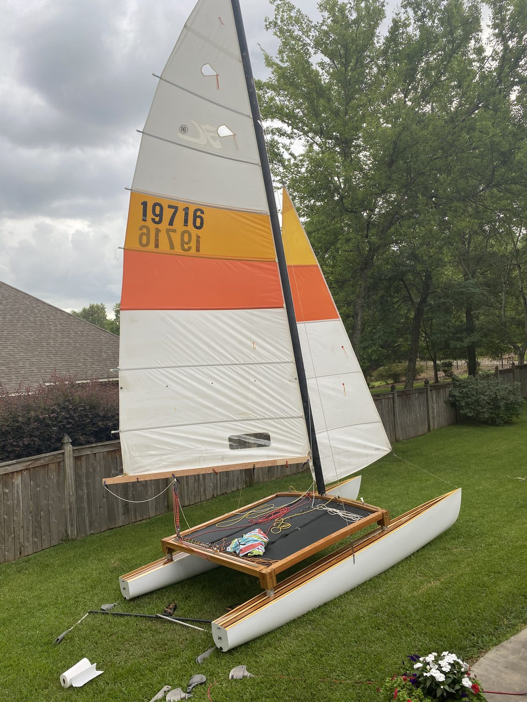
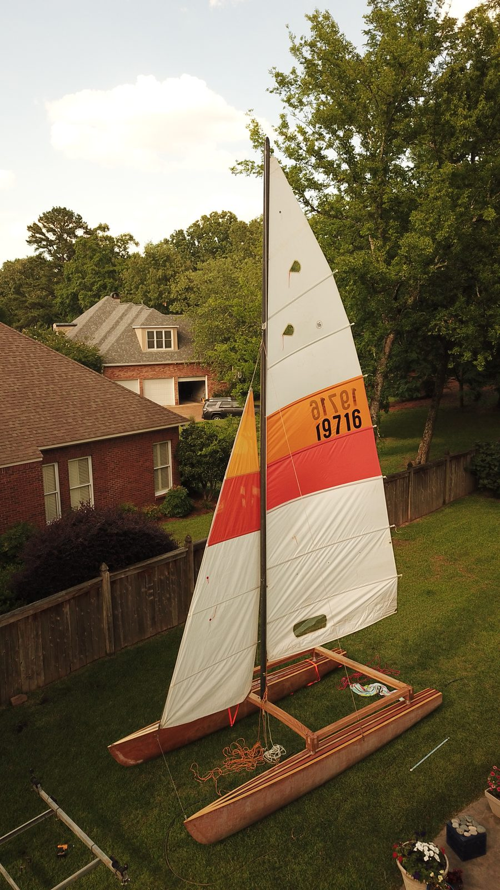
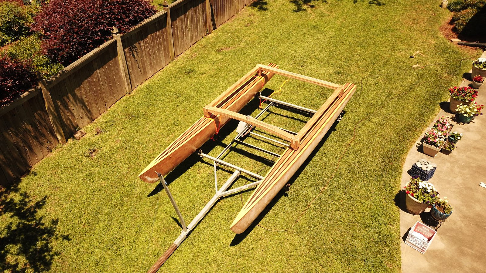
Sea Trials
She sailed in early July 2020, under main and jib, with three people aboard.
Both hulls sit in the water in the trial photographs and the boat is sailing upright rather than flying a hull, which is what a light-air day with three people on a 16 ft platform looks like. The important result is the unglamorous one: the boat floats on its designed lines with a realistic crew load, the rig stands, the platform carries it, and it goes where it is pointed.
That is the whole point of a first sail. Everything before it — the stiffness comparison, the load path through the pylons, the shroud geometry worked out by standing the rig in a backyard — is a prediction. The first sail is the only test that checks all of those predictions simultaneously, against water rather than against a drawing.
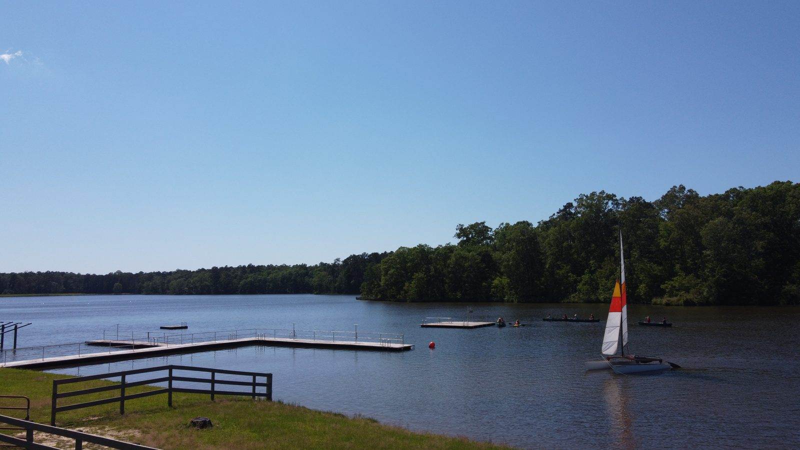
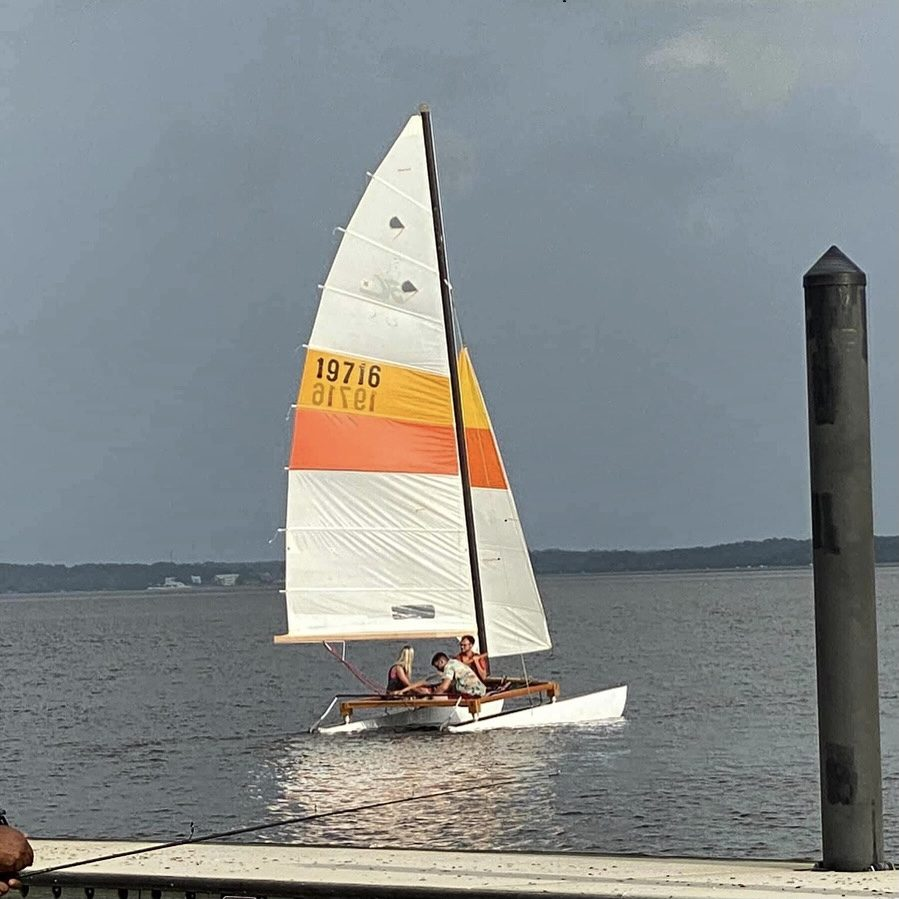
Still sailing
The aerial photographs above were taken in May 2021, ten months after the first launch, on different water and in different conditions — the boat sailing single-handed in light air with a clean wake and both hulls level.
That is a more meaningful structural result than the first sail was. A boat that floats once has survived a single day. A boat still sailing a year later has been assembled and disassembled repeatedly, trailered, rigged and de-rigged, left in the sun, and loaded and unloaded from its pylons many times over — which is the actual service life a demountable platform has to survive, and the regime where a wooden structure with bolted and bonded joints would show any weakness it had.
Registration
The boat carries a Mississippi Department of Wildlife, Fisheries and Parks registration and a state-assigned hull identification number.
A home-built boat has no manufacturer's HIN, so the number has to be applied for and issued by the state before the vessel can be registered. It is a small administrative step and a real milestone: it is the point at which the thing in the backyard becomes a registered vessel with a legal identity.
Takeaways
- Designing to a fixed, proven subsystem trades design freedom for eliminated risk — the sail plan needed no validation because someone else had already done it
- Comparing materials on stiffness-per-weight rather than strength, because the failure mode of a hull panel is deflection, not rupture
- Certification as a proxy for a property that cannot be inspected — the Lloyd's stamp is really a guarantee about voids you will never be able to see
- Building the tooling before the product: the work table's flatness set the accuracy limit for every panel made on it
- Changing a material's properties rather than fighting them — wetting plywood to bend it is cheaper than redesigning the deck around what dry plywood will tolerate
- Prototyping in cheap material before committing to expensive: the corner joint went through four stages, the spar was dry-fitted before glue, and the first rudder was carved from foam and thrown away. Mistakes were consistently arranged to happen where they cost nothing
- Prototype effort should scale with how many times a part repeats — four identical corners justify four rounds of prototyping in a way a one-off joint never would
- Iteration counts for more than a clean first pass: the hull that got built was the third one, and each attempt bought information the previous one could not
- A simulation is only as good as its material card — a correct modulus made the deflection results usable, while placeholder strength values made anything derived from stress meaningless
- Fixed overhead per work session is a schedule multiplier that never appears in an estimate built from task durations alone